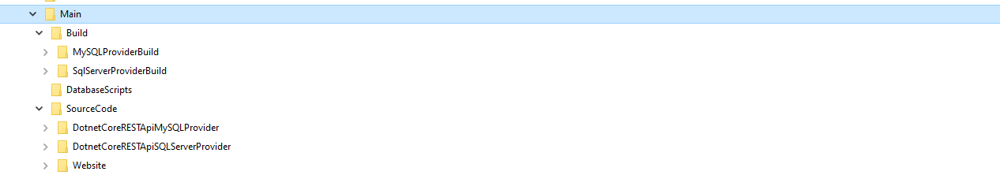
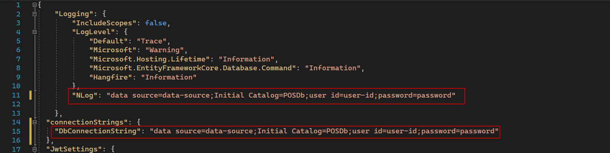
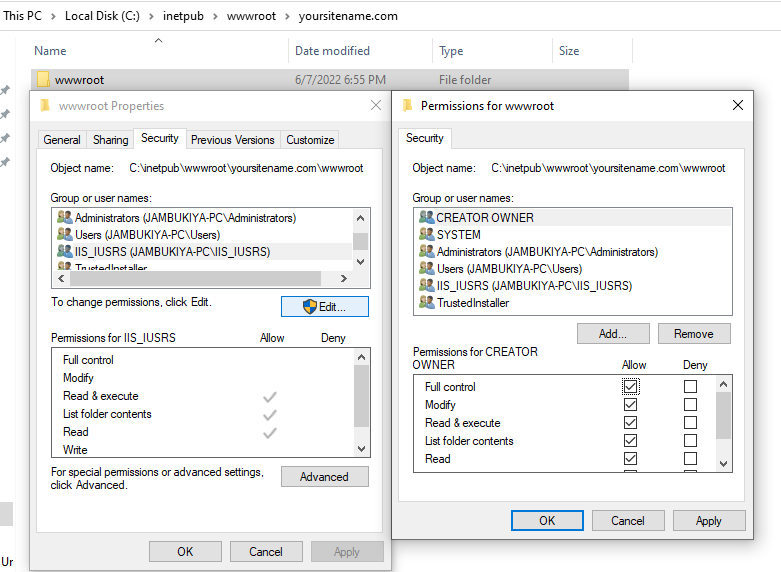
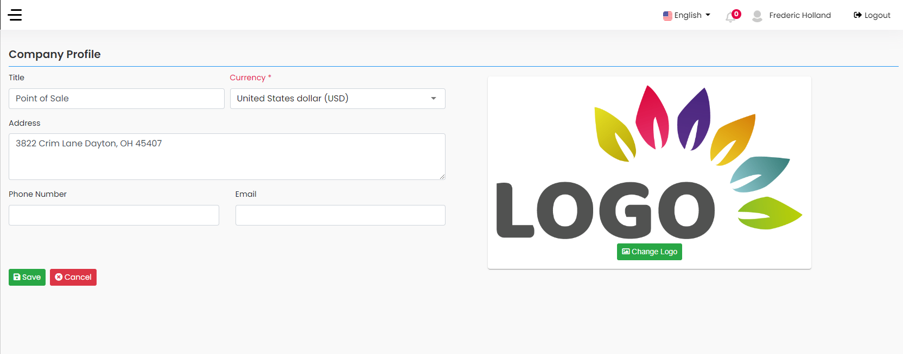

Advanced POS With Inventory Management
Hello everyone!
Thank you for purchasing solution. If you have any questions that are beyond the scope of this help file, please feel free to email via my user page contact form here. Thanks so much!
- Created: 8 June 2022
- By: mlglobtechnology
- Email: mlglobtech@gmail.com
Quick Start Guide
Setting up Advanced POS With Inventory Management is very simple. You will receive the following files after extracting project compressed file:
- Build: It contains the build files for both SQL Server and MySQL Provider which you can directly deploy to your server.
- DatabaseScripts: This folder contains initial scripts for both the database providers.
- Souce Code: It contains the complete source code for front-end and REST API. There are different REST API folders for SQL Server and MySQL database providers.
.Net Core Installation
Prerequisites
.NET CORE 7 SDK and VISUAL STUDIO 2022, SQL SERVER or MySql 8 +
Running local copy
- Based on your requirement choose the SQL or MySQL API in respective folder of source.
- Open solution file POS.sln from .Net core folder into visual studio 2022.
- Right click on solution explorer and Restore nuget packages.
- Change database connection string in appsettings.Development.json in POS.API project.
- From Solution Explorer, Right click on POS.API project and click on Set as Startup Project from menu.
- To run project Press F5.
Angular Installation
Prerequisites
Although POS can be run without any development experience, it would be much easier if you already have some experience. The following instructions allow you to run a local copy on your machine.
Install tools
If you have not yet installed nodejs, please Download and globally install nodejs : https://nodejs.org
Note: download
Recommended For Most Users version
A detailed instruction on how to install NodeJS is available here.
Note: Make sure you have Node version >= 4.0 and NPM >= 3 . Also globally installed typescript.
Installing Angular-CLI globally is as simple as running this simple command:
npm install -g @angular/cli
After the tools is installed, go inside of the Angular directory and run below command to install dependencies:
Run npm install -f to install node dependencies defined in package.json.
Running local copy
To run a local copy in development mode, replace REST API URI (apiUrl) variable in environment file inside src --> environments -->environment.ts
execute ng serve and go to http://localhost:4200 in your browser.
To run the local copy in production mode and build the sources, execute
ng build. This will builds a production version of the application. All
html,css and js code is minified and put to dist folder. The contents of
this folder you can to put to your production server when publishing the application.
Hosting
Prerequisites
- .Net 7 Runtime
- The .NET Core Hosting Bundle For Window
- SQL Server or MySQL database provider
In Order to host the application on Windows or Linux Server even you don't need to create database manully. you just need to change the connection string and based on you connection setting database will be created automatically once application initialize.
Change Connection String
Change the connection in appsettings.Development.json file as describe as below image:
Host on IIS Server:
- Copy all files and folders from either MySQLProviderBuild or SqlServerProviderBuild from
Build Folder and Paste at
C:\inetpub\wwwroot\{{yoursitename}} - Open the IIS
- Add New Website
- Enter you site name
- Copy C:\inetpub\wwwroot\{{yoursitename}} folder path to physical Path.

Host on Linux Server(nginx):
- Step 1: Install .Net Core 7 on Linux
- Step 2:
Intall nginx
sudo apt update
sudo apt install nginx
- Step: 3
Install MySQL
sudo apt update
sudo apt install mysql-server
sudo systemctl start mysql.service
- Step: 4
Install zip
sudo apt-get install zip
- Step: 5 Copy all files and folders from either MySQLProviderBuild or SqlServerProviderBuild from Build Folder and Paste at /var/www/{{yourwebsitename}}
-
Step: 6
Create linux custom service to follow below steps:
- cd /etc/systemd/system
- Create a file named your-service.service and include the following:
[Unit] Description=Example .NET Web API App running on Linux [Service] WorkingDirectory=/var/www/{{yourwebsitename}} ExecStart=/usr/share/dotnet/dotnet /var/www/{{yourwebsitename}}/POS.API.dll Restart=always # Restart service after 10 seconds if the dotnet service crashes: RestartSec=10 KillSignal=SIGINT SyslogIdentifier=dotnet-example User=www-data Environment=ASPNETCORE_ENVIRONMENT=Development [Install] WantedBy=multi-user.target -
Reload the service files to include the new service.
sudo systemctl daemon-reload
- To enable your service on every reboot
sudo systemctl enable your-service.service
- Start your service
sudo systemctl start your-service.service
-
To check the status of your service
sudo systemctl status your-service.service
- For More Detail please visit:
Host ASP.NET Core on Linux with Nginx
-
cd /etc/nginx/sites-available
- Create a file named yoursite.com and include the following:
server { listen 80; server_name {{yoursitename}} www.{{yoursitename}}; #listen 80 default_server; #listen [::]:80 default_server; location / { proxy_pass http://127.0.0.1:5000; proxy_http_version 1.1; proxy_set_header Upgrade $http_upgrade; proxy_set_header Connection keep-alive; proxy_set_header Host $host; proxy_cache_bypass $http_upgrade; proxy_set_header X-Forwarded-For $proxy_add_x_forwarded_for; proxy_set_header X-Forwarded-Proto $scheme; } } - Enable Service:
sudo ln -s /etc/nginx/sites-available/yoursite.com /etc/nginx/sites-enabled/
- Restart Nginx
sudo systemctl restart nginx
Host on Linux Server(Apache):
- Step 1: Install .Net Core 7 on Linux
- Step 2:
Intall Apache
sudo apt update
sudo apt install apache2
- Step: 3
Install MySQL
sudo apt update
sudo apt install mysql-server
sudo systemctl start mysql.service
- Step: 4
Install zip
sudo apt-get install zip
- Step: 5 Copy all files and folders from either MySQLProviderBuild or SqlServerProviderBuild from Build Folder and Paste at /var/www/{{yourwebsitename}}
-
Step: 6
Create linux custom service to follow below steps:
- cd /etc/systemd/system
- Create a file named your-service.service and include the following:
[Unit] Description=Example .NET Web API App running on Linux [Service] WorkingDirectory=/var/www/{{yourwebsitename}} ExecStart=/usr/share/dotnet/dotnet /var/www/{{yourwebsitename}}/POS.API.dll Restart=always # Restart service after 10 seconds if the dotnet service crashes: RestartSec=10 KillSignal=SIGINT SyslogIdentifier=dotnet-example User=www-data Environment=ASPNETCORE_ENVIRONMENT=Development [Install] WantedBy=multi-user.target -
Reload the service files to include the new service.
sudo systemctl daemon-reload
- To enable your service on every reboot
sudo systemctl enable your-service.service
- Start your service
sudo systemctl start your-service.service
-
To check the status of your service
sudo systemctl status your-service.service
- For More Detail please visit:
Host ASP.NET Core on Linux with Apache
-
cd /etc/apache2/sites-available
- Create a file named yoursite.com and include the following:
- Enable Service:
sudo ln -s /etc/nginx/sites-available/yoursite.com /etc/nginx/sites-enabled/
- Restart Apache
sudo service apache2 restart
Configuration
-
Users:
In the initial Script two user has been created as below:- User name : admin@gmail.com Password : admin@123
-
User name : employee@gmail.com
Password : employee@123
-
SMTP Settings:
In order to send email You need to configure the Default SMTP Settings under the Admin Area. -
Company Settings:
Change Title, Currency, Billing Address, Phone Number and Email from Company Profile inside
the Setting.

Re-deploy the Changes After Customization on the server.
- Publish the dotnet project.
- For the front-end, create the ClientApp folder inside the Publish folder.
-
Run
npm run buildthat will create dist/posadminportal foder. - copy all the files & folders inside dist/posadminportal and past it into ClientApp(created in step-2) folder.
- Now, Copy Publish Folder into your server.
Build .Net Project
Build Angular Project
Features
-
Dashboard:
- Quick Statistics of total sales, purchase, sales return purchase return.
- Monthly best selling products chart.
- Calendar with reminder scheduler.
- Latest inquiry List.
- Recent sales order expected shipment.
- Recent purchase order expected delivery
- Products: Manage all products with brand, category, unit, sales price, purchase price, taxes and image.
- Suppliers: Manage all suppliers with billing and shipping address.
- Customers: Manage all your customers' details.
-
Purchase Order:
- Manage purchase order with multiple products and tax, discount, quantity and price.
- Generate/print purchase order invoice/receipt.
- Create multiple purchase order from purchase order request/quotes.
- Manage purchase order payments.
- Return specific item from existing purchase order and generate/print invoice/receipt.
- Receive automated notification/email on delivery date of purchase order.
-
Sales Order:
- Manage sales order with multiple products and tax, discount, quantity and price.
- Generate/print sales order invoice/receipt.
- Manage sales order payments.
- Return specific item from existing sales order and generate/print invoice/receipt.
- Receive automated notification/email on shipment date of sales order.
-
Inventory:
- Product inventory is automatically manage by purchase and sale orders with average sales, purchase price and stock. adjust stock inventory by adding manually.
- view All purchase, sale, purchase return and sales return history with unit per price.
- Expense: Manage all company expense with category and receipt.
- Inquiries: Keep track of all inquiries and manage it’s activities that have been generated from different sources. you can also set reminder on specific date to get notification or email to user.
-
Reports:
- Purchase order report
- Sales order report
- Purchase order payment report
- Sales order payment report
- Expense report
- Sales Vs Purchase report.
- Product Purchase Report
- Product Sales Report
- Stock Report
- Sales Vs Purchase Report
- Supplier Payment Report
- Customer Payment Report
- Profit/Loss Report
- Reminder Scheduler: You can set recurring Daily, Weekly, Monthly, Quarterly, Half Yearly, Yearly or Specific Date reminders in the system to get notification or email.
- Support Multiple Language: By default, the application comes with English, Chinese, Spanish, Arabic, Russian, Japanese, German and French languages. You can add a new language in just minutes.
- User & Role Management: Admin can create User and Role via admin panel and assign roles to users.
- Permissions: You can give staff specific permissions on what they can do or can’t do. Role and User permissions can be overridden for each staff member.
- High Performance: Advanced POS With Inventory Management is lightweight and has lightning fast performance and page load time out of the box.
- Email: Setup predefined email templates from text editor, Manage email SMTP and send predefined email template to supplier/anyone by one click.
- Full Source Code: You will get the full Source Code of Advanced POS With Inventory Management and build versions for SQL Server and MySQL database provider.
.Net Core Project Structure
The project structure is as follows:
POS.sln/ * Projects Solution │ │ │ ├──POS.API * REST API Controller, Dependancy configuration, Auto mapper profile │ │ │ ├──POS.MediatR * Command handler, Query handler, Fluent API validation │ │ │ ├──POS.Repository * Each entity repository │ │ │ ├──POS.Domain * Entity framework dbContext | | │ ├──POS.Common * Generic repository and Unit of work patterns │ │ │ ├──POS.Data * Entity classes and DTO classes │ │ │ ├──POS.Helper * Utility classes
Support and Feedback
All questions you can send via the contact form HERE.
I will answer all questions within 24-48h in the order they were received.
Please do not panic if I do not answer too long – I love my buyers and I’ll answer for all questions ;)
Support for my items includes:
- Answering questions about how to use the item.
- Answering technical questions about the item (and included third party assets).
- Help with defects in the item or included third party assets.
- Item updates to ensure ongoing compatibility and to resolve security vulnerabilities.
Item support does not include:
- Installation of the item.
- Hosting, server environment, or software.
- Support for third party plug-ins.
- Plugins integration.
- Support for issues caused by user modifications in the solution’s code, styling and general functionality.
More information about the terms of support you can see here: https://themeforest.net/page/item_support_policy
Conclusion
Thank you for your purchase!
Thanks for reading the Instruction, hope it’s been really helpful and resolved most of your concerns.
 if you
enjoy
the product! It is very important for us to have certain goal.
if you
enjoy
the product! It is very important for us to have certain goal.